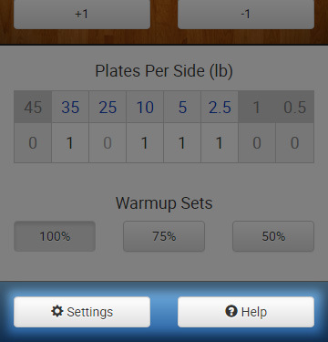

<div id="modal" class="modal fade">
  <div class="modal-dialog">
    <div class="modal-content">
      <div class="modal-header">
        <button type="button" class="close" data-dismiss="modal" aria-label="Close"><span aria-hidden="true">&times;</span></button>
        <h4 class="modal-title">UI Tour: Footer</h4>
      </div>
      <div class="modal-body">
        <p>Use the Settings and Help buttons to access their respective menus so you can better use Barell Bro.</p>
        
      </div>
      <div class="modal-footer">
        <button type="button" class="btn bb-nav btn-primary pull-left" data-dismiss="modal">Exit</button>
        <button type="button" class="btn bb-nav btn-default" data-target="back">Back</button>
      </div>
      <script>
      var navTargets = {
        'back': 'ui-tour-5'
      }

      $('.btn.bb-nav').on('click', function(){
        var targetModal = navTargets[$(this).data('target')];

        if(targetModal == undefined) {
          return;
        }

        $('#modal').modal('hide');
        $('#modal').on('hidden.bs.modal', function(e){
          showModal(targetModal);
        });
      });
      </script>
    </div><!-- /.modal-content -->
  </div><!-- /.modal-dialog -->
</div><!-- /.modal -->
